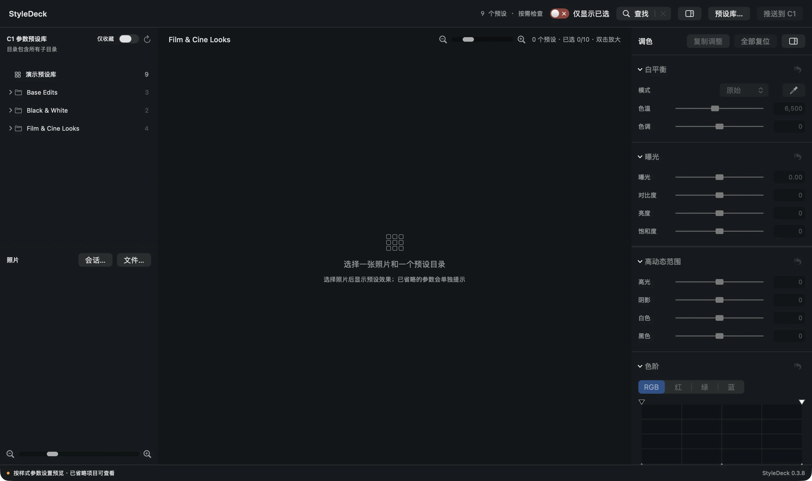

StyleDeck 0.4.8 · build 37
安装与开始使用
当前版本为 0.4.8 / build 37，适用于 Apple Silicon（arm64）。最低系统声明为 macOS 14；macOS 14/15 实机与干净 Mac 离线首启仍待验证。
- 安装：下载官方 DMG，打开后将 StyleDeck 拖入“应用程序”，再从“应用程序”启动。版本与下载状态 ↗
- 准备：自行安装并合法授权 Capture One，准备自己拥有使用权的 .costyle 预设。
- 权限：首次推送时允许 StyleDeck 自动化控制 Capture One；若曾拒绝，到“系统设置 → 隐私与安全性 → 自动化”检查。文件访问权限按系统提示授予。
- 语言与预设库：“显示 → 语言”可立即切换简体中文、繁体中文和英文；手动选择的预设目录会在下次启动时记住，目录移动后可重新选择。
许可：免费提供，按 PolyForm Strict 1.0.0 使用。允许原文规定的非商业用途，包含个人研究、学习、爱好及指定非商业组织类别；不授予商业使用、修改或再分发权利。许可与第三方声明 ↗
本指南在旧版真实截图基础上核对文字到 0.4.8；截图并非全部重新采集。推送“已完成”表示执行与保存及必要身份、预设和标记确认完成，不代表所有调色数值或成片像素一致。重要项目请先备份并用副本测试。
Capture One
用户样式预览工具
Capture One 的预设比较与调色辅助工具 Add-on 工作流
在 StyleDeck 并排比较已有的 Capture One 预设，筛选候选、完成微调，
再把选中的预设与调整推回 Capture One，继续你的修图流程。
同一张 RAW，比较 Capture One 预设的实际预览。点图可放大。样片来源与许可 ↗
围绕 Capture One 使用
把预设比较这一段，交给 StyleDeck。
在 Capture One 工作流中，StyleDeck 主要承担预设的集中比较、候选筛选和微调。打开会话或加入 RAW，快速找到几个方向，再把候选与调整送回 C1，继续精修和输出。
这里的“预设”沿用 StyleDeck 界面用词，对应本例的 Capture One 用户样式（Styles，.costyle）。使用你已安装和拥有的样式库即可。
保留现有 C1 会话和已经安装的预设，选择这次要尝试风格的照片。
用同一张照片并排查看多个预设，勾选候选，必要时做针对性的调整。
将当前照片已选预设与调色推入目标会话，在 C1 中确认最终效果并继续处理。
两张均为本次真实操作截图，全部使用公开样片与专用 C1 演示会话。看具体推送步骤 ↓
先看懂界面
一个工作区，把比较和调整连起来。
左边选照片与预设，中间看效果，右边做调整。先记住这三个位置，就能开始第一次比较。
选择一个目录，比较其中的预设；点目录左边的小三角，可以展开单个预设名称。
基本功能
把比较与筛选，接进 C1 工作流。
照片保持相同，变化来自预设。比较时先固定一个观察区域，例如墙面的冷暖或玩偶的暗部。
从 C1 会话开始，
逐张比较用户样式。
打开包含四张不同 RAW 的 Capture One 演示会话，切换照片查看样式；再用 Nikon 静物样片比较四个预设，留下两个候选，保存项目并接回 C1。
开始前准备
准备一个 C1 会话，放入多张公开 RAW。
本例在 Capture One 新建专用会话 StyleDeck Guide Demo，把四张公开 RAW 放入会话的 Capture 文件夹。四张照片分别来自 Nikon Z6、Canon 5D IV、Sony a7 III 和 Fujifilm X-T4；下方有各自下载入口。第一次详细比较使用 Nikon Z6 静物样片（编号 3581，摄影：Ludger Heide）。画面里的橙蓝折纸、浅色墙面和深色玩偶，是比较效果的三个观察点。
下载本例 RAW 约 26 MB · .NEF · 来自 raw.pixls.us预设取自当前已安装的 Film & Cine Looks：Cinema Cool、Cinema Warm、Film F400、Film K100。你的预设目录可以不同，操作方法相同；本指南不提供预设文件。

从 Capture One 会话进入
打开会话，一次载入多张照片。
先在 Capture One 确认演示会话中已经有四张不同照片。在 StyleDeck 左下方“照片”区域点 会话…，进入会话目录，选择 StyleDeck Guide Demo.cosessiondb，再点 Open / 打开。选择的是会话数据库文件。
菜单入口与快捷键 “文件 → 打开 C1 会话…” / ⇧⌘O。打开后建立未命名 StyleDeck 项目；它与 C1 会话分别保存。
同一个会话，四个不同文件。
右侧 C1 浏览器显示四张照片；Nikon 照片还保留前次演示的两个候选变体。多个变体仍是同一个照片文件，本例的四张照片按文件名区分。
载入后，先看照片列表，再切换当前照片。
左下角会列出 Canon-5D-IV.CR2、Fujifilm-XT4.RAF、Nikon-Z6.NEF 和 Sony-a7III.ARW。选择 Film & Cine Looks 目录后，点击缩略图，顶部文件名和整组预览都会切换。本次详细操作请点 Nikon-Z6.NEF。
会话中管理照片，StyleDeck 中逐张比较样式，再把当前照片的候选推回 C1。
尚未建立 C1 会话时，也可点“文件…” / ⇧⌘I 加入一张或多张 RAW，再通过“文件 → 设置 C1 目标会话…”接到现有或新建会话。
真实截图 · 鼠标路径
从会话文件，到逐张比较。
先看打开会话的位置，再看照片如何切换；第 2 步会展示打开会话并选好预设目录后的状态。

演示由实际操作截图与网页鼠标动画组成，可暂停和逐步查看；不会操作你的软件。
选择预设目录
先选一组预设，不必一次看完整个库。
在左上方预设目录中，点 Film & Cine Looks。中间会显示这个目录里的四个预设，以及一张 RAW 基础参考图。
点目录左边的小三角，可以展开预设名称。想比较整组效果时，选中的是目录名称。
点窗口右上方 预设库…，选择包含 .costyle 文件的目录。新加入预设后，可点目录上方的刷新按钮。
为了让画面清楚，本例把已安装预设中的三组放进“演示预设库”。它是本次演示的目录名称。
比较不同风格
看同一个位置，才容易看出差别。
先比较墙面是偏暖还是偏冷，再看橙蓝折纸的颜色浓度，最后看玩偶暗部是否还保留细节。需要更宽的比较区域时，点右上方的调色面板按钮收起侧栏。
看到“已省略”时 本例 Cinema Warm 的卡片带有“已省略 4 项”。点提示查看具体内容，确认哪些预设参数没有参与当前预览，再判断效果。
留下候选
点图片右上角圆圈，留下两个方向。
本例选择 Cinema Cool 和 Film F400。分别点它们图片右上角的空心圆圈，圆圈变成蓝色勾选，已选数量变为 2/10。再次点击可以取消。
勾选：这张照片的候选
用于当前照片的已选筛选，以及后续按已选范围导出或推送。换一张照片，选择可以不同。
收藏：长期常用的预设
点名称旁的星形收藏预设，所有照片共用。它与右上角勾选独立；星级和色标也有各自的标记用途。
打开“仅显示已选”，收拢比较范围。
点击窗口顶部 仅显示已选。网格只保留当前照片选中的两个预设，放大窗口也按这份候选列表切换。关闭这个开关，可以回到目录浏览。
让候选靠近一些 把右上方“预览图片大小”滑杆向右移动一点，放大候选，让两张图片紧邻排列。本图使用放大后的实际界面；不要拉得过大，否则可能变为单列。
看一遍操作位置
鼠标怎么走，候选怎么留下。
真实截图上的鼠标路径演示，可暂停，也可以逐步查看。
演示由实际操作截图与网页鼠标动画组成；点击“播放演示”后开始。
放大检查
双击图片，仔细看留下的候选。
双击 Cinema Cool 的图片进入放大预览。点顶部向右箭头，或按 →，切到 Film F400。观察相同位置，再决定下一步是否需要调整。
检查细节前先看预览设置 放大窗口使用当前设置的预览尺寸。本例为长边 2880 px；若要检查原尺寸细节，请在“StyleDeck → 设置 → 预览”中选择“原始尺寸”，等待预览完成。
保存本次选择
把这次比较保存成一个项目。
按 Esc 返回主窗口，再按 ⌘S，或选“文件 → 保存”。首次保存时输入 C1 会话预设对比，再点 保存。
窗口出现“项目已保存：C1 会话预设对比”后，本次照片引用、预设选择和调整就有了可重新打开的项目。
.styledeck 项目引用原图，不把 RAW 本体复制进去。移动或删除原图后，需要重新定位；项目保存也不等于导出 JPEG / PNG。
第一次预设对比完成。
你已留下两个候选并保存比较进度。接下来，把候选送回 Capture One，让这次比较接上原来的修图流程。
从 StyleDeck，把候选送到 C1。
这里分别说明：推回在 StyleDeck 打开的 C1 会话，以及指定一个现有或新建的目标会话。先确认当前照片、候选和目标，再开始推送。
本例当前照片是 Nikon-Z6.NEF，已勾选 Cinema Cool 和 Film F400，所以处理两项样式及其相应调色。它不会一次推送左下角所有照片；多照片会话请逐张选择、逐张推送。收藏星形不能代替候选勾选。
从会话打开后直接推回
推回在 StyleDeck 打开的 C1 会话。
- 用“会话…”打开来源。在 StyleDeck 左下方点“会话…”，选择
StyleDeck Guide Demo.cosessiondb。打开后，这个会话会成为新项目的默认推送目标。查看会话打开截图 → - 选择当前照片与候选。点 Nikon-Z6.NEF 的缩略图，勾选本例两个预设，按需完成调色。确认顶部文件名、候选圆圈和已选数量。
- 确认没有改过推送目标。如果之前指定过其他会话，可右键点“推送到 C1”→“设置 C1 目标会话…”，核对目标；也可用“文件 → 设置 C1 目标会话…”。要回来源会话，就选择最初打开的那份
.cosessiondb。 - 左键点“推送到 C1”。尚未改过目标时，会直接向来源会话推送，不需要重新新建会话。等待窗口完成提示，然后在同一会话中查看候选变体。
“已打开的会话”指哪一个？指在 StyleDeck 中通过“会话…”载入、并关联到当前项目的会话。切换 Capture One 的前台窗口，不会自动改变 StyleDeck 的推送目标；若已手动改过目标，以目标设置为准。
主动指定推送目的地
把候选送到你指定的会话。
直接用“文件…”加入 RAW 时，可以先设置目标；已经从 C1 会话打开的项目，也可以改选其他目标。设置目标只改变推送目的地，不会把照片列表换成目标会话的内容。如果要浏览另一个会话的全部照片，请使用“会话…”打开它。
1. 打开目标设置
在窗口右上方右键点“推送到 C1”，选 设置 C1 目标会话…。同样的入口也在菜单“文件 → 设置 C1 目标会话…”。
左键按钮执行推送；右键菜单设置目的地。这两个操作分开使用。
2a. 送到一个已有的 C1 会话
- 将对话框顶部模式设为 现有会话。
- 点“现有会话”这一行右侧的 选择…。进入目的地会话目录，选择对应的
.cosessiondb，再点 Open / 打开。不要选成 RAW 文件或普通照片文件夹。 - 回到目标设置，核对选中的会话，再按照片管理方式决定是否勾选“复制新增图片到会话目录”。
2b. 让这次推送新建一个 C1 会话
- 顶部模式改为 新建会话。
- 输入容易辨认的名称，例如 StyleDeck Guide Export。
- 点“保存目录”右侧的 选择…，选择一个已经存在的父目录。软件会在其中建立以会话名称命名的目录；名称不要与该目录下的已有会话重名。
- 选择引用原图或复制新增图片。实际新建会话与送入候选，会在随后执行推送时进行。
3. 选引用原图，还是复制副本？
| 选项 | 照片如何进入 C1 | 适用情形 |
|---|---|---|
| 不勾选（默认） | 引用原始照片；C1 会在原图目录保存调整和缓存。 | 照片已按自己的目录管理，继续沿用原路径。 |
| 勾选复制 | 由 C1 导入新增图片的副本，原文件保留。 | 希望目标会话收纳这些图片的副本，例如独立演示会话。 |
这个选项用于新增图片，不等于将整个来源会话复制到目标。推送候选变体和复制照片也是两个不同动作。
4. 确认目标，再执行推送
从“设置 C1 目标会话…”主动进入时，点 确定 只记录设置，随后回主窗口左键点 推送到 C1 才开始。后续推送会复用该项目的目标与图片选项；想换目的地，再打开设置修改。
如果不想改目标，点 取消 即可。目标设置或推送完成后，按 ⌘S 保存当前 StyleDeck 项目。
首次直接点了“推送到 C1”？如果当前项目还没有目标，软件会先弹出目标设置；此时点“确定”后，会继续执行刚才那次推送。本文采用“先设置、再推送”的路径，方便先核对目的地。
推送完成后
先看完成提示，再回 C1 确认变体。
- 等窗口上方返回结果。本例已完成的真实操作提示为“新增完成 2 项，更新完成 0 项，已推送跳过 0 项，未完成 0 项”。先确认未完成数量。
- 看两张候选卡片的“已推送”。这表示该项目记录了对应候选的完成状态。若提示“有更新”，说明当前候选有待处理的改动；失败时先查看具体原因，再重试。
- 在 Capture One 打开实际目标会话。找到同名照片及新增候选变体，选择其中一项确认效果，再继续精修。不要只在 C1 当前前台的另一个会话中寻找。
本例来源会话已保留 Nikon 原始变体 1 和前次演示变体 2、3；会话项目这轮新增的是 4、5。编号取决于会话中已有的变体，以实际新增结果为准。
未完成、目标不可访问时
先读软件给出的具体原因，确认目标会话文件和照片路径可访问；需要时重新设置目标，再重试。候选选择会保留，已经完成且未变化的项目会跳过。
保存项目与推送分别完成什么？
⌘S 保存 StyleDeck 的照片引用、候选、调色和关联。推送把当前候选交给 C1；推送后再保存一次，便于下次继续。已保存的 .styledeck 项目通过“文件 → 打开 StyleDeck 项目…”继续使用。
这张照片已接回 Capture One。
回到 StyleDeck 点另一张照片，为它分别勾选候选，再沿同样路径推送。
把画面留给照片
全屏以后，左右面板在哪里？
主窗口按 F 或选“显示 → 进入全屏”。工具栏和两侧面板会自动收起，网格获得更大的显示区域。再次按 F 或 Esc 回到普通主窗口。
真实截图 · 鼠标路径
全屏中，把鼠标移到边缘。
左侧选照片与目录，右侧调色；移回中间，两侧面板再次收起。
演示由实际操作截图与网页鼠标动画组成，可暂停和逐步查看；不会操作你的软件。
把指针移到最左 / 最右边缘，进入对应面板即可操作。指针留在面板内，它会保持展开；移回中间图片区域后收起。顶部菜单栏可将鼠标移到屏幕上边缘调出。
点右上角侧栏图标，可隐藏 / 显示调色面板；也可选“显示 → 隐藏调色面板 / 显示调色面板”。左侧预设与照片区域在普通窗口保持显示，可拖动它与网格之间的分隔边调整宽度。
放大窗口的全屏与面板
双击效果图片进入放大窗口，按 F 或点顶部全屏图标进入 / 退出全屏。右侧调色面板用顶部侧栏图标或“显示”菜单隐藏和恢复；放大窗口不包含左侧照片 / 目录面板。按 Esc 关闭放大预览返回主窗口；若正在灰点等取样，先取消取样。
临时查看原图 放大窗口按住 空格，松开回到当前效果。这里显示软件当前提供的原图参考；RAW 内嵌参考与 RAW 基础显影可能不同，不能把它理解成 Capture One 原图对照。
鼠标与没有默认快捷键的入口
- 双击效果图片：放大预览；滚轮向上 / 向下：放大 / 缩小；左键拖动：移动已放大的画面。
- 放大窗口“适合”：显示完整图片；“填满”：填满图片区域，超出部分可拖动。
- 图片右上角圆圈：候选勾选；名称旁星形：收藏；色标按钮：选择色标；星级区域：评级。
- 主窗口顶部 / 照片区底部滑杆：分别调整预览网格大小 / 照片缩略图大小。
- “查找”“仅显示已选”“仅收藏”“预设库…”“推送到 C1”、导入文件夹、设置 C1 目标会话、在 Finder 中显示照片、复制 / 粘贴 / 复位调色：通过对应按钮或菜单使用，当前没有另设默认快捷键。
快捷键与鼠标操作
全部快捷键，按使用场景查。
| 按键 | 作用 | 范围 / 菜单入口 |
|---|---|---|
| ⌘O | 打开 StyleDeck 项目 | 文件 → 打开 StyleDeck 项目… |
| ⇧⌘O | 打开 Capture One 会话 | 文件 → 打开 C1 会话… |
| ⇧⌘I | 导入一个或多个文件 | 文件 → 导入文件… |
| ⌘S | 保存当前项目 | 文件 → 保存 |
| ⇧⌘S | 另存一份项目 | 文件 → 另存为… |
| ⇧⌘E | 打开照片导出窗口 | 文件 → 导出照片… |
| ⌘W | 关闭当前项目 | 文件 → 关闭当前项目 |
| ⌘Z | 撤销调色 | 编辑 → 撤销调色 |
| ⇧⌘Z | 重做调色 | 编辑 → 重做调色 |
| ⌘, | 打开设置入口 | StyleDeck → 设置（预览 / 样式参数 / 缓存） |
| ⌘Q | 退出 StyleDeck | 退出前先保存项目 |
| F | 主窗口 / 放大窗口切换全屏 | 在当前窗口操作；输入文字时先退出输入框 |
| Esc | 主窗口全屏：退出全屏 | 回到普通主窗口 |
| ← / → | 放大窗口：上一个 / 下一个效果 | 切换范围与当前网格一致 |
| 按住空格 | 放大窗口：临时看原图参考 | 松开回到当前效果；原图参考的含义见上方说明 |
| Esc | 放大窗口：关闭预览回主窗口 | 正在取样时先取消取样；再次按下再关闭 |
| 0–5 | 星级控件获得焦点后：设定星级 | 先点击星级区域；不是全局照片评级快捷键 |
| ← / ↓；→ / ↑ | 星级控件获得焦点后：减少 / 增加一星 | 在放大窗口请优先用数字，避免与候选切换混淆 |
| Delete / ⌦ | 星级控件获得焦点后：清除星级 | 仅在星级控件内 |
| Return | 查找窗口：应用条件；导出窗口：开始导出 | 导出按钮可用时生效；预览设置窗口中为“完成” |
| Esc | 查找 / 照片信息 / 导出 / 样式参数窗口：关闭 | 取样等场景的 Esc 作用依当前窗口而定 |
⌘ Command · ⇧ Shift · ⌦ 向前删除。快捷键作用于当前活动窗口；不可用的菜单项会变灰。主窗口的 F 与放大窗口的 F 分别控制各自窗口。文字输入框内可按 macOS 常规使用 ⌘A 全选、⌘C 复制、⌘X 剪切、⌘V 粘贴文字；它们不代表复制 / 粘贴照片调色。
StyleDeck 与 Capture One 怎样配合？
StyleDeck 独立打开，作为 Capture One 的辅助工具使用。它集中处理预设比较、候选筛选与微调，再把当前照片的候选推回 C1。你可以从已有 C1 会话进入，也可以直接导入 RAW 后选择目标会话。
勾选以后，原图被修改了吗？
预设选择和手动调整保存在 StyleDeck 项目中。导出照片时另行生成 JPEG / PNG，原始 RAW 文件继续作为来源使用；推送到 C1 后，C1 保存对应变体的调整资料。
图片有蓝色边框，就表示已经选中吗？
看右上角的圆圈是否出现勾选。高亮边框用于指出当前操作的效果，勾选才表示加入当前照片的候选；两者可以独立。
为什么找不到本例的预设？
示例名称来自本机已安装的预设。可以换成自己拥有的任意一组，沿同样步骤比较；网站不附带这些预设。确认“预设库…”指向包含 .costyle 的目录。
“已省略”提示应该怎么看？
点卡片上的提示查看具体项目。部分参数可能因设置关闭或当前照片类型而未参与预览；先了解省略内容，再评价整体效果。不能处理的活动参数会显示具体原因。
案例与版本
本样章的素材说明
摄影：Ludger Heide。Nikon Z 6，raw.pixls.us 档案编号 3581，下载于 2026 年 10 月 28 日，已核对 SHA-256。档案标注 CC0；RAW 内保留 CC BY-SA 4.0 署名。本站保留作者署名，照片及其预设效果图按 CC BY-SA 4.0 提供，包含显影、色彩和尺寸调整。软件界面与预设文件不在此照片授权范围。
会话另含 Canon 5D IV（#983，Lothar Kimmeringer）、Sony a7 III（#2414，作者未提供）和 Fujifilm X-T4（#3918，作者未提供）三张公开样片，档案标注 CC0 1.0；均核对 SHA-256。完整来源、署名与下载地址见来源记录。
截图使用 StyleDeck 0.3.8 的独立演示环境。预设取自当前 Capture One 已安装的 Film & Cine Looks 等目录，只展示名称、使用过程及效果，不分发预设文件。
本样章已完成“基本功能介绍”“第一次预设对比”和“推送到 Capture One”两条路径说明。屏幕尺寸、系统语言和预设库内容不同，界面排列可能略有变化。